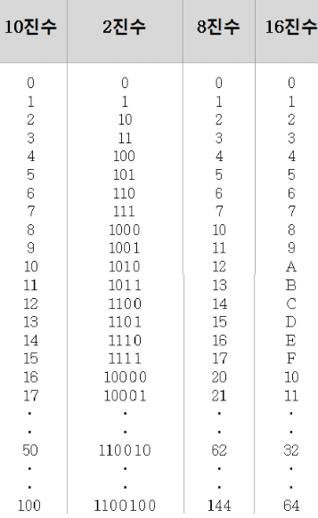

-
2진법 (Binary)
- 이진법에서는 숫자가 0 또는 1로만 이루짐.
- 각 자리수는 2의 거듭제곱 값을 가지며, 왼쪽으로 갈수록 값이 커짐 8진법 (Decimal)
- 8개의 숫자(0, 1, 2, 3, 4, 5, 6, 7)를 사용 각 자리는 8의 거듭제곱을 나타냄
- 예를 들어, 234₈는 8진수에서 2, 3, 4의 값을 각각 8의 거듭제곱을 곱한 값을 더한 것 10진법 (Octal)
- 0, 1, 2, 3, 4, 5, 6, 7, 8, 9 → 총 10개의 숫자 사용
- 각 자리수는 10의 거듭제곱에 따라 값이 결정됨
- 숫자가 오른쪽부터 왼쪽으로 갈수록 10¹, 10², 10³… 만큼 값이 커짐 16진법(Hexadecimal)
- 숫자 0~9: 0부터 9까지의 값
- 문자 A~F: 10부터 15까지의 값 (A=10, B=11, C=12, D=13, E=14, F=15)
- 각 자리의 값은 16의 거듭제곱에 따라 계산
